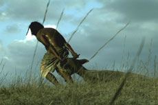

|
DAY TINGNGA TI MISTERYO TI KRISTO NEGRO
THE MIDDLE MYSTERY OF CHRISTO NEGRO
KHAVN | Philippinen 2009 | 70 Min.
Material: DV
Format: MiniDV
Originalsprache: Tagalog
Drehbuch: Khavn De La Cruz
Kamera: Albert Banzon
Ton: Lawrence S. Ang
Schnitt: Lawrence S. Ang
Mit Macoy Duran, Mary Tamayo, Kat Sandoval
Produktion: Khavn De La Cruz
Vertrieb: Filmless Films
www.khavndelacruz.com
Deutsche Erstaufführung
This is not a film by KHAVN! Das will man fast glauben, angesichts dieses filmischen Fiebertraums. Ritualisierung und Katholizismus manifestieren sich in KHAVN’s bislang spartanischstem Werk auf radikal-ästhetische Weise. Die Bilder scheinen aus einer anderen (Vor-)Zeit, auch des Kinos, zu kommen. Und auch die angedeutete Geschichte zwingt uns dazu, atavistischen Strukturen zu folgen. Und zwar denen von Opferung, Selbst-Kasteiung und Kreuzigung. Das Ganze ist angesiedelt in einer wahrhaft biblischen Landschaft, von KHAVNS’s großartigem Kameramann Albert Banzon wahnhaft als flirrende Exkursion ins Reich der Mythen abgebildet.
KHAVN kulas talon Delakrus, so der volle Name des Enfant terrible der Filipino New Wave, wurde 1973 in Manila geboren. Er ist Filmemacher, Dichter, Autor und Komponist. Mit 19 Lang- und 60 Kurzfilmen ist er der produktivste der Filmemacher der sogenannten "digitalen Generation". Seit 2002 ist er Leiter des philippinischen MOV Digitalfilmfestivals. Er ist Sänger und Komponist in der Pianokombo "Delakrus" und der Rockband "The Brockas".
Filme (Auswahl): Squatterpunk 2007 (UNDERDOX 02) | Ultimo 2007 (UNDERDOX 02) | The Muzzled Horse Of An Engineer In Search Of Mechanical Saddles 2008 | Philippine Bliss 2008 (UNDERDOX 03) | Three Days of Darkness 2008 | Manila in the Fangs of Darkness 2008 | The Middle Mystery of Kristo Negro 2009
zurück
|